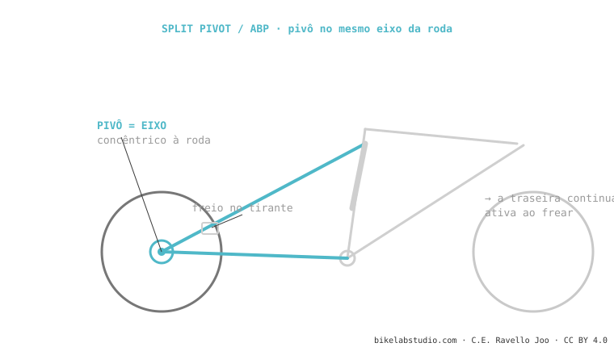

O Split Pivot (de Dave Weagle) e o ABP da Trek são a mesma coisa com nome diferente: um pivô concêntrico com o eixo da roda. Ao separar a pinça de freio do movimento do eixo, a suspensão continua ativa ao frear (anti-rise reduzido). O leverage ratio e o anti-squat são definidos pelo resto do linkage. Usam Trek, Devinci e Salsa. É um dos sistemas de suspensão.
Seu truque é um único detalhe de posição: colocar o pivô exatamente onde a roda gira. E esse detalhe muda como a bike se sente freando.

Em muitos monopivôs, frear comprime e "trava" a suspensão (anti-rise alto). Ao colocar o pivô concêntrico ao eixo e montar a pinça no tirante, o ABP desacopla em parte a força do freio do movimento da roda: a traseira continua copiando obstáculos enquanto você freia. Esse é todo o objetivo do sistema.
Sim, mesmo conceito, nome diferente. Split Pivot é a patente; ABP é a marca da Trek.
ABP: pivô no eixo (concêntrico). Horst: pivô no braço inferior, à frente do eixo. Geometria diferente.
Diga o modelo e dizemos sua curva e setup. Fale conosco pelo WhatsApp
© 2026 BikeLab Studio. Conteúdo sob CC BY 4.0: você pode copiar, traduzir e publicar, inclusive com fins comerciais. A citação é obrigatória. Sem atribuição, a licença é revogada automaticamente (CC BY 4.0, §6.a) e o uso passa a ser violação de direitos autorais: solicitamos a retirada do conteúdo e sua desindexação. · Design e propriedade: Carlos Ravello Joo